Mes expériences professionnelles et associatives
Mes compétences professionnelles
Bien que je n’aie pas encore d’expérience professionnelle, j’ai acquis des compétences à travers mes projets académiques, personnels et mes engagements associatifs.
- Réalisation de projets en développement web et programmation
- Travaux pratiques en Python, Java et PHP
- Participation à des activités associatives et travail en équipe
- Conception de mini-projets et d’exercices algorithmiques
Compétences associatives
- Adaptation : Je suis très flexible face aux changements et aux nouvelles situations.
- Intelligence émotionnelle : Je comprends et gère mes émotions ainsi que celles des autres.
- Créativité : J'apporte de nouvelles idées ou solutions innovantes.
- Communication : Je sais transmettre des idées clairement et écouter activement.
- Travail en équipe : J’ai la capacité de collaborer efficacement avec les autres.
Témoignages : Monsieur Cherif Diouf, notre professeur en développement web avancé / PHP, me décrit comme une étudiante sérieuse et investie dans ses études. De même que mes autres professeurs tels que Monsieur Madiop Diouf.
Mes compétences techniques
Langages de programmation
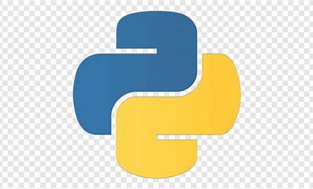
Python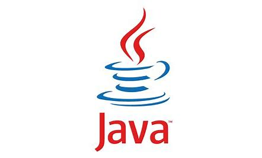
Java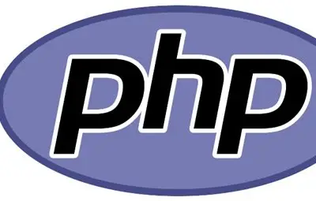
PHP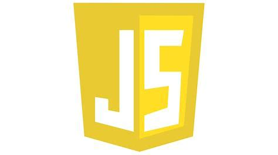
JavaScript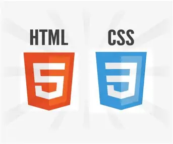
HTML / CSS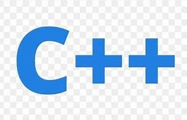
C
Outils et environnements
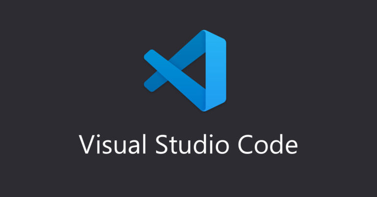
Visual Studio Code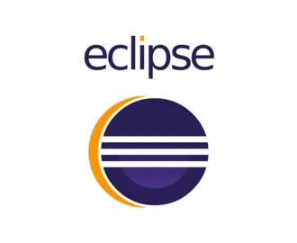
Eclipse IDE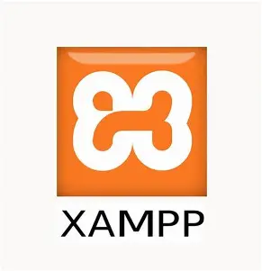
XAMPP- CodeBlocks
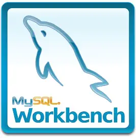
MySQL Workbench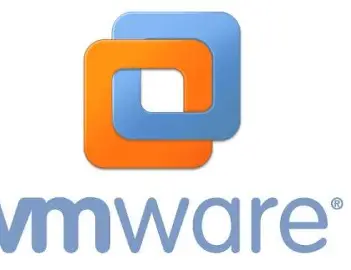
VMware Workstation Power AMC
Power AMC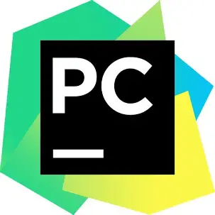
PyCharm
Technologies et domaines
- Développement web front-end et back-end
- Base de données MySQL
- Réseaux et téléinformatique
- Conception d’algorithmes
- Débogage et optimisation du code